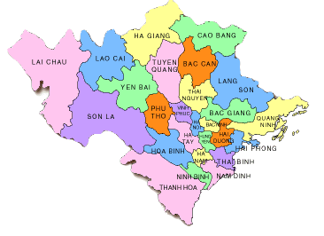

SaPa |
| Nằm dưới chân dãy Hoàng Liên Sơn hùng vĩ và chỉ cách Hà Nội 5 - 6 giờ di chuyển bằng đường cao tốc, Sa Pa là điểm đến lý tưởng quanh năm. Ngoài những thửa ruộng bậc thang vào mùa lúa chín, Sa Pa còn hút khách nhờ vẻ đẹp của nhiều điểm đến khác. Sa Pa có khí hậu mát mẻ nên phù hợp với những chuyến du lịch quanh năm. Bạn chỉ cần tránh mùa mưa bão từ tháng 6 đến đầu tháng 8, bởi thời tiết cực đoan có thể gây lũ ống, lũ quét, sạt lở... |

Mộc Châu |
| Nằm cách trung tâm Hà Nội gần 200 km và 4 tiếng di chuyển bằng ôtô, Mộc Châu từ lâu đã được coi là một trong những điểm đến hấp dẫn nhất ở khu vực miền Bắc, đặc biệt vào mùa hoa mận dịp đầu năm. Mộc Châu có bốn mùa xuân, hạ, thu, đông với thời tiết ôn hòa, quanh năm có hoa trái. Tháng 1, cao nguyên có màu xanh của những đồi chè nảy lộc, hoa đào, hoa mận, hoa mơ, mai anh đào... |

Vịnh Hạ Long |
| Vịnh Hạ Long là một vịnh nhỏ thuộc phần bờ tây vịnh Bắc Bộ tại khu vực biển Đông Bắc Việt Nam, bao gồm vùng biển đảo của thành phố Hạ Long thuộc tỉnh Quảng Ninh. Là trung tâm của một khu vực rộng lớn có những yếu tố ít nhiều tương đồng về địa chất, địa mạo, cảnh quan, khí hậu và văn hóa, với vịnh Bái Tử Long phía Đông Bắc và quần đảo Cát Bà phía Tây Nam, vịnh Hạ Long giới hạn trong diện tích khoảng 1.553 km² bao gồm 1.969 hòn đảo lớn nhỏ, phần lớn là đảo đá vôi, trong đó vùng lõi của vịnh có diện tích 335 km² quần tụ dày đặc 775 hòn đảo. |
Hà Nội |
| Những công trình từ thời Pháp thuộc, hàng quán vỉa hè bày bán đặc sản địa phương, xe máy luồn lách trên đường đông đúc... là những ấn tượng đầu tiên của du khách về Hà Nội. Với nhiều người, Hà Nội có tất cả những thứ thú vị để khám phá nơi đây theo cách riêng của mình. Thời gian lý tưởng nhất để du lịch Hà Nội là vào mùa thu từ tháng 8 đến tháng 11 và mùa xuân từ tháng 3 đến tháng 4. Không ít người cho rằng mùa thu là lúc tiết trời đẹp nhất trong năm ở Hà Nội, với bầu trời xanh trong, gió heo may se se lạnh, lá vàng rơi, mùi hoa sữa thoảng... Mùa xuân về tiết trời ấm áp, đường phố như thay áo mới khi cây cối đâm chồi nảy lộc, muôn hoa đua nở... |

Đảo Cô Tô |
| Cô Tô là huyện đảo ở phía đông tỉnh Quảng Ninh, cách đất liền khoảng 80 km. Cô Tô có gần 50 đảo nhỏ, trong đó khách du lịch chủ yếu khám phá cụm đảo Cô Tô, Cô Tô Con và Thanh Lân. Thời điểm du lịch Cô Tô đẹp nhất là mùa hè và thu. Tháng 4 và tháng 5 lý tưởng nhất vì trời không có bão, không mưa, nắng chưa nóng. Tháng 6 và 7 phù hợp để du lịch hè nhưng thường xuyên có bão. Tháng 9 và tháng 10 cảnh đẹp nhưng trời bắt đầu lạnh, mưa nhiều hơn - điểm cộng là giá cả không đắt đỏ như mùa cao điểm. |
